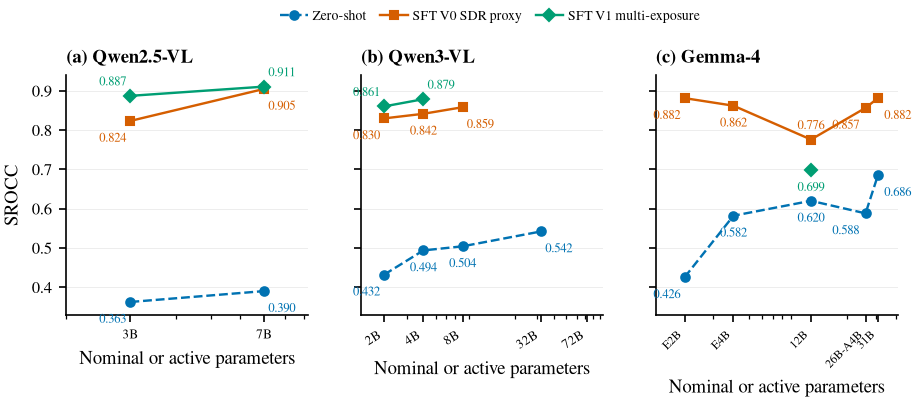
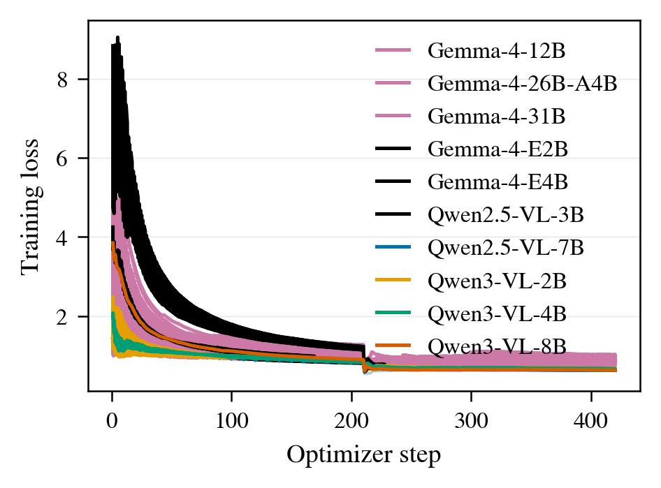

BrightRate-LM
Representation-Aware Quality Assessment for User-Generated HDR Video
What this is
BrightRate-LM predicts the perceptual quality of user-generated HDR video and returns a score, a description of visible defects, and reasoning for the score. This work extends BrightRate (WACV 2026) by testing how multimodal language models respond to tone-mapped, multi-exposure, and native PQ inputs.
Key figures





Main result
BrightRate-LM values are five-split means. BrightRate values are published 100-split medians.
| Model | Input | SROCC | PLCC | KRCC | RMSE |
|---|---|---|---|---|---|
| BrightRate-LM, 7B | Multi-exposure | 0.9052 | 0.9107 | 0.7281 | 5.5348 |
| BrightRate, published | HDR-aware features | 0.8887 | 0.8970 | 0.7059 | 5.7514 |
Insights
- The multi-exposure interface improves four of five matched models.
- The largest measured gain is 0.0638 SROCC for Qwen2.5-VL-3B.
- Qwen3-VL-2B with multi-exposure input exceeds Qwen3-VL-8B with tone-mapped input.
- Gemma-4 zero-shot strength does not carry over to the matched supervised recipe.
- Both tested native PQ interfaces fail to learn a useful ranking.
- BrightRate-LM reports a score, a defect description, and score reasoning.
Data
Experiments use BrightVQ from BrightRate.
BibTeX
@article{saini2026brightratelm,
title = {BrightRate-LM: Representation-Aware Quality Assessment for User-Generated HDR Video},
author = {Saini, Shreshth and Wang, Yilin and Birkbeck, Neil and Adsumilli, Balu and Bovik, Alan C.},
journal = {Machine Vision and Applications},
year = {2026},
note = {Submitted}
}